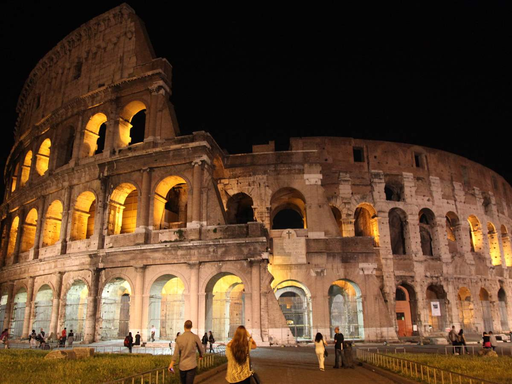
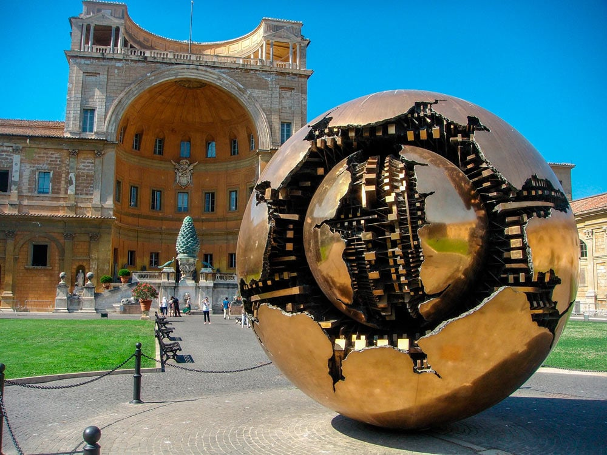
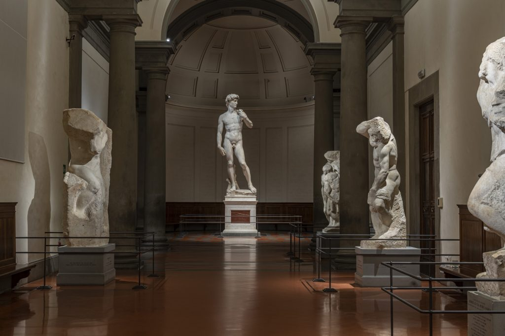

¡Bienvenido a Italia, la tierra de la pasión, la historia y la belleza eterna! Sumérgete en la rica
cultura italiana mientras exploras ciudades impregnadas de historia, disfrutas de la deliciosa cocina local y te
maravillas con los impresionantes paisajes. Desde las antiguas ruinas de Roma hasta las majestuosas colinas de la Toscana
y las serenas aguas de Venecia, Italia ofrece una experiencia inolvidable para todos los viajeros. ¡Aquí, puedes ser un soñador
y hasta formar tu propia banda de Gangstars!

Coliseo Romano, Roma
Sumérgete en la grandeza del pasado romano mientras exploras el Coliseo, un antiguo anfiteatro donde tuvieron
lugar épicas batallas de gladiadores. Imagina la emoción y el drama de la batalla final de la Parte 5 de Jojo que
se desarrolla en este icónico lugar, mientras admiras su impresionante arquitectura y escuchas sus historias fascinantes.

Museos Vaticanos, Ciudad del Vaticano
Adéntrate en un mundo de arte y esplendor en los Museos Vaticanos, donde encontrarás una vasta colección de obras
maestras que abarcan siglos de historia y cultura. Desde los frescos de la Capilla Sixtina hasta las esculturas
clásicas, cada rincón de este lugar te transportará a un reino de belleza y creatividad.

Galería de la Academia, Florencia
Contempla la magnificencia de la estatua de David de Miguel Ángel en la Galería de la Academia de Florencia.
Esta obra maestra del Renacimiento italiano te dejará sin aliento mientras te sumerges en la habilidad y
la pasión del genio renacentista.
Itinerario de 5 días y 4 noches en Italia
Día 1: Llegada a Roma
- Llegada al aeropuerto internacional de Roma Fiumicino.
- Visita a la Fontana di Trevi para lanzar una moneda y hacer un deseo.
- Cena en un restaurante tradicional romano.
Día 2: Explorando Roma
- Visita al Coliseo Romano, donde podrás imaginar las épicas batallas de gladiadores que tuvieron lugar allí.
- Recorrido por el Foro Romano y el Palatino para explorar la antigua Roma.
- Tarde libre para explorar el Barrio Trastevere y sus encantadoras calles adoquinadas.
Día 3: Excursión a Florencia
- Viaje en tren de alta velocidad (Trenitalia) a Florencia.
- Llegada a Florencia y visita a la Galería de la Academia para ver la famosa estatua de David de Miguel Ángel.
- Visita al Duomo de Florencia y el Baptisterio.
Día 4: Descubriendo el Vaticano
- Visita a los Museos Vaticanos para admirar la increíble colección de arte y los frescos de la Capilla Sixtina.
- Explora la Basílica de San Pedro y sube a la cúpula para disfrutar de vistas panorámicas de Roma.
- Cena de despedida en un restaurante romántico con vistas al río Tíber.
Día 5: Último día en Roma y regreso
- Visita a la Piazza Navona y el Panteón de Agripa.
- Tiempo libre para disfrutar de un último café italiano y un helado.
- Traslado al aeropuerto para tomar el vuelo de regreso a casa.
Costos de Viaje en Italia
- Traslados: Los traslados pueden costar entre 20 a 50 dólares por trayecto, dependiendo del medio de transporte elegido.
- Hospedaje: Los precios oscilan entre 50 a 150 dólares por noche, según la ubicación y categoría del alojamiento.
- Entradas a sitios turísticos: Las entradas suelen estar entre 10 a 20 dólares por persona.
- Alimentación: Se estima un gasto de 15 a 30 dólares por comida, dependiendo del lugar y el tipo de restaurante.